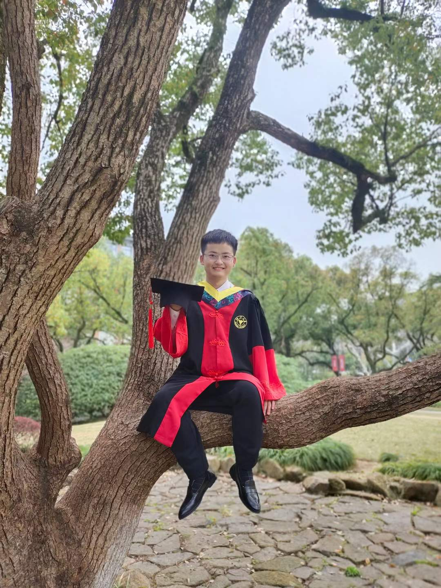

|  | PhD Candidate |
Ph.D. Student, College of Computer Science and Technology, Zhejiang University, 2018-.
Visiting Student, Department of Intelligence Science and Technology, Kyoto University, 2022-.
B.Eng., College of Information Science & Electronic Engineering, Zhejiang University, 2014-2018.